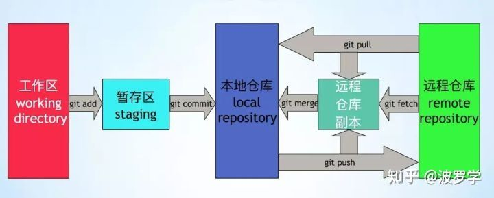

git
github 搜索技巧
React.memo extension:tsx stars:>100 filename:tsx
常用命令
# 删除文件夹
git rm logs/ -r -f
# 客户端操作
➜ /Users/huangrupeng/git >git clone git@rp-master:/usr/local/git/sample.git
# 关联远程git库
git remote add origin git@github.com:michaelliao/learngit.git
## 同步更新fork的远程库
# 先确定是否建立了主repo的远程源
git remote -v
# 如果只看到你自己的两个源(fetch 和 push),那就需要添加主repo的源
git remote add upstream URL
git remote -v
# 想与主repo合并
git fetch upstream
git merge upstream/master
# 初始化 Git 仓库
git init
# 添加文件到暂存区
git add
# 查看当前工作区状态
git status
# 将暂存区文件提交到当前分支
git commit
# 查看提交历史
git log --pretty=oneline --abbrev-commit
git log --graph --pretty=oneline --abbrev-commit
# 丢弃某个文件的修改
git checkout file
## 版本回退
git reset --hard commit_id
# HEAD 是当前版本，HEAD^是上个版本
git reset --hard HEAD\^
# 查看历史命令，便于回到未来的某个版本
git reflog
# 回退完强制推送到远程分支
git push -f
# 自己的分支回滚用 reset，reset 会丢弃某些提交
# 公共分支回滚用 revert，revert 会产生一次新的提交，版本依然是向前的
# 撤销最近一次提交
git revert HEAD
### 创建一个空分支
git checkout --orphan <branchname>
git rm --cached -r .
### 远程分支
# 查看远程分支信息
git remote -v
## 添加多个远程分支
#添加github add后面远程分支的名字随便起
git remote add origin https://github.com/xxx(仓库地址)
#添加oschina
git remote add oschina https://git.oschina.net/xxxx(仓库地址)
#提交到oschina
git push oschina master(分支名)
#提交到github
git push origin master(分支名)
#从oschina更新
git pull oschina master
#从github更新
git pull origin master
#提交所有本地分支到远程 origin 分支
git push --all origin
# 新建远程仓库，将本地仓库关联远程仓库
# fatal: refusing to merge unrelated histories
git pull origin master --allow-unrelated-histories
# A 是远程 repository 名字，B 是本地 branch 名字，C 是远程 branch 名字
# B C 相同时可以省略
git push A B:C
# 意思是将本地分支 master 推送到远程仓库 origin 的 master 分支上
# 所有成员开发 dev 分支，也要与远程仓库保持一致
git push origin master
git push origin dev
# 创建切换 dev 分支
git checkout -b dev
# 切换到 dev 分支
git checkout dev
# 合并指定分支到当前分支
git merge
# 还原工作区，撤销当前目录及子目录下面所有的修改(丢弃工作区的修改)
git checkout -- .
# 撤销 merge 请求
git merge --abort
## 标签
# tag 是一个里程碑，一个标志一个点，branch 是一个新的征程一条线
# tag 就是一个只读的 branch,一般为每一个可发布的里程碑版本打一个 tag
# 创建新的标签
git tag v1.0
# 查看所有标签
git tag
# 从某次提交出打标签
git tag v1.0 commit-id
## Bug 分支
# 将当前工作区修改的内容暂时隐藏起来，并恢复到提交状态
git stash
# 创建 bug 分支
git checkout -b issue-101
# 提交修改
# 切换到 master 分支
git checkout master
# 合并分支
git merge --no-ff -m "merged bug fix 101" issue-10
# 删除分支
git branch -d issue-101
# 删除远程 issue-101 分支
git push origin --delete issus-101
# 查看之前隐藏的内容
git checkout dev
git stash list
# 恢复之前隐藏的内容
git stash pop
## git 忽略已经被提交的文件
# 从 git 库中删除对该文件的追踪
git rm -r --cached xxxx
# 更新 .gitignore 忽略掉目标文件
# git commit -m "We really don't want Git to track this anymore!"
# 丢弃本地修改的所有文件（新增、修改、删除）
git checkout . && git clean -xdf
# 只克隆某个分支
git clone -b v2 https://github.com/ant-design/ant-design-pro.git --depth=1 orz-fe
# 同步 fork 的分支代码
git remote -v
git remote add upstream <remote-repo-url>
git fetch upstream
git merge upstream/master
git push origin master
# 合并特定的 commit 当前分支
git cherry-pick 62ecb3
团队协作： master 主分支，需要与远程分支同步 dev 开发分支，需要与远程分支同步
问题
搭建 git 服务
我在本地的 linux 虚拟机上搭建了一个 git 服务，系统版本为 centos6.5
# 服务器操作
# 安装git服务
[root@rp-master ~]# yum install git
[root@rp-master ~]# adduser git
[root@rp-master git]# mkdir -p /usr/local/git
# 初始化git仓库
[root@rp-master git]# git init --bare sample.git
Initialized empty Git repository in /usr/local/git/sample.git/
[root@rp-master git]# chown -R git:git sample.git/
# 配置git用户ssh免登录
[root@rp-master git]# cd /home/git/.ssh/
authorized_keys id_rsa.pub
[root@rp-master .ssh]# cat id_rsa.pub >> authorized_keys
gitlab 工作流
git clone
git checkout -b $feture_name
git commit -am ''
git push origin $feture_name
review code on commit page
create a merge request
team lead will review code & merge it to main branch
git rebase
rebase 变基，找公共祖先
git rebase，即先找到共同的祖先，然后
# 合并最近的 4 次提交记录
git rebase -i HEAD~4
# p,pick = use commit 使用当前 commit
# r,reword = 使用当前 commit，但是修改 commit 消息
# e，edit = 使用当前的 commit，stop amending
# s 将当前提交合并到上次的提交
# 将四次提交合并成一次
s cacc52da add: qrcode
s f072ef48 update: indexeddb hack
s 4e84901a feat: add indexedDB floder
p 8f33126c feat: add test2.js
git checkout feature1
# 如果当前分支有 master 分支的最新提交，则会直接 merge
# 如果 master 分支比当前分支新，则会添加一个新的 commit
git merge master
# 1. git 把feature1分支的每个 comit 取消掉
# 2. 把上面的临时操作保存成 patch 文件，存在 .git/rebase 目录下
# 3. 将 feature1 分支更新到最新的 master 分支
# 4. 把 patch 文件应用到 feature1 分支下
git rebase master
# rebase 出现冲突，git 会停止 rebase 并让你解决冲突，解决完冲突后，用 git add 更新
# 1. 修改冲突部分
# 2. 如下 (不要 git commit)
git add
# 3. 如下
git rebase --continue
# 4. 如果第三部无效，可以执行 git rebase --skip
# 取消 rebase，回到开始前的状态
git rebase -abort
# --no-ff Git执行"快进式合并"（fast-farward merge），会直接将Master分支指向Develop分支。
# 使用--no-ff参数后，会执行正常合并，在Master分支上生成一个新节点。
git merge --no-ff develop
# 保留分支提交记录，同时会生成一个新的 commit 记录
git merge --no-ff -m "mege with no-ff" develop
# 将多次分支 commit 历史压缩为一次
git merge --squash develop
# 快进式合并，直接将 HEAD 指针指向合并分支的头，删除分支，则会丢失分支信息
git merge develop
git pull 和 git fetch 的区别

pull=fetch+merge 可以帮助理解这一点，但严格意义上来讲，pull≠fetch+merge
git fetch 并没更改本地仓库的代码，只是拉取了远程 commit 数据，将远程仓库的 commit id 更新为 latest。 ./git/refs 里面有三个文件夹：heads、remotes、tags。
git reset --soft,--hard 的区别
HEAD当前分支当前版本的游标Index暂存区，修改一个文件，最开始是 unstaged 状态，git add提交这些修改之后会加入到 index，称为 staged 状态， commit 时，index 里面的修改会提交working tree` 当前的工作目录
--soft仅仅重置 HEAD 到指定的版本，不会修改 index 和 working tree，也就是重置到 add 之后的状态--mixed重置到 add 之前的状态--hard重置到上次提交之前的状态，且修改无法找回
git 提交规范
<type>(<scope>): <subject>
type 有如下这些：
- feat：新功能（feature）
- fix：修补 bug
- docs：文档（documentation）
- style： 格式（不影响代码运行的变动）
- refactor：重构（即不是新增功能，也不是修改 bug 的代码变动）
- test：增加测试
- chore：构建过程或辅助工具的变动
scope 用于说明 commit 影响的范围
subject 用于 commit 的简短描述
- 以动词开头
- 第一个字母小写
- 结尾不加句号
参考
远程仓库版本回退方法 commit message 和 change log git merge 和 rebase 的区别